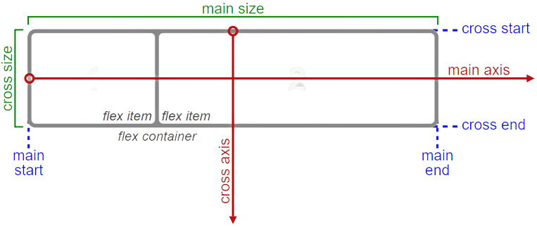

El Módulo de Caja Flexible, también conocido como flexbox, fue diseñado principalmente para el acomodo interno de los elementos y/o componentes de una interfaz.

| Número. | Propiedad. | ¿Qué es lo que hace? | Valores. |
|---|---|---|---|
| 1 | Display | Define que una caja será de tipo bloque o línea. | Flex | inline-flex |
| 2 | Flex-direction | Cambia la orientación del eje principal (row o column). | Row | row-reverse | column | column-reverse |
| 3 | Flex-wrap | Determina si los elementos "hijos" son obligados a permanecer en una misma línea o pueden distribuirse en varias líneas. | Nowrap | wrap | wrap-reverse |
| 4 | Flex-flow | Es una propiedad atajo para las propiedades flex-direction y flex-wrap. | Flex-direction flex-wrap |
| 5 | Justify-content | Define la alineación de los hijos en el eje principal. | Flex-start | center | flex-end | space-between | space-around | space-evenly |
| 6 | Align-items | Define la alineación de los hijos en el eje transversal. | Stretch | flex-start | flex-end | center | baseline |
| 7 | Align-content | Realiza la misma función de “align-items” pero cuando la caja flexible es multilínea. | Flex-start | flex-end | center | space-between | space-around | space-evenly | stretch |
| Número. | Propiedad. | ¿Qué es lo que hace? | Valores. |
|---|---|---|---|
| 1 | Flex-grow | Cuando la caja flexbox tenga espacio sobrante, es la habilidad o el factor de crecer para llenar el espacio. | 0 |1 | 2 | etc… |
| 2 | Flex-shrink | Especifica el factor de contracción de un flex item, es decir, los ítems con esta propiedad se encogerán para llenar el contenedor de acuerdo a su número. | 1 | 2 | etc… |
| 3 | Flex-basis | Tamaño base de los “hijos” antes de aplicar algún estilo. | Auto | 100px | 2rem | 50% | etc… |
| 4 | Flex | Es un atajo de las propiedades flex-grow, flex-shrink y flex-basis. | 0 | 1 | auto |
| 5 | Order | Representa el orden que tendrán los elementos hijos en la caja flexbox. Un valor menor siempre irá antes que un valor mayor. | 0 | 1 | 2 | -3 | etc... |
| 6 | Align-self | Sobreescribe el valor de la propiedad align-items sólo para un elemento hijo específico. | Stretch | flex-start | flex-end | center | baseline |